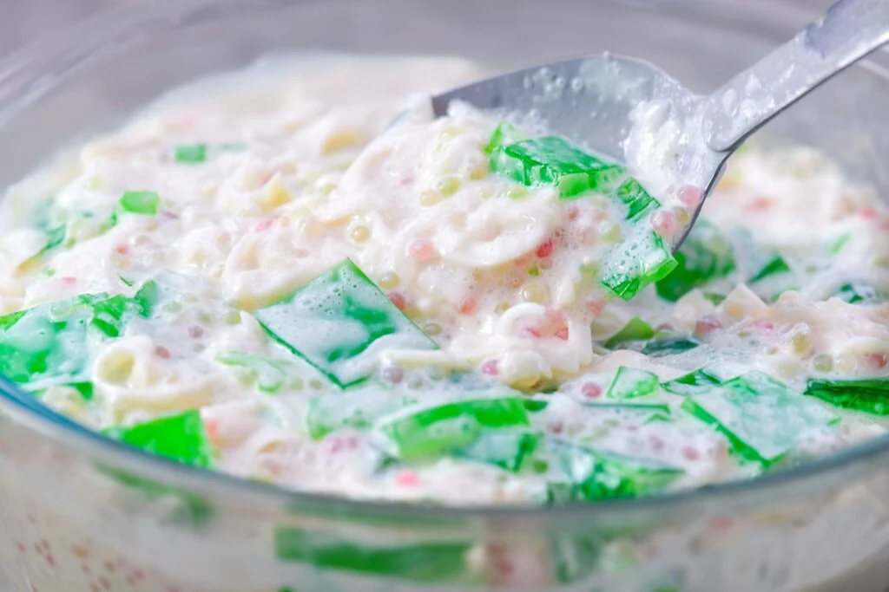

BUKO PANDAN

Description:
Buko Pandan is a creamy and indulgent Filipino dessert that combines young coconut, pandan-flavored gelatin, and sweetened cream.
Known for its vibrant green color and rich, tropical taste, this dessert is a staple in festive celebrations and special gatherings.
With its refreshing sweetness and smooth texture, Buko Pandan is a crowd-pleaser that’s easy to prepare.
- Prep: 30 minutes
- Cook: 15 minutes
- Optional Setting Time: 8 hours
- Servings: 4
Ingredients:
- 20 oz. young coconut strips
- 250 ml Nestlé All Purpose Cream
- 150 ml Nestlé Carnation Condensada
- ½ cup cooked sago pearls (optional)
- 2 cups water
- 3 oz. powdered gelatin
- ½ lb. pandan leaves
- ¼ cup sugar
- ½ tsp buko pandan flavoring
Steps:
- Boil water with pandan leaves for 15 minutes. Remove leaves.
- Add sugar, powdered gelatin, and flavoring to the boiling water. Stir until dissolved.
- Pour into a mold and let it cool until firm. Chill if needed.
- Combine coconut strips, cream, condensed milk, and cooked sago pearls in a bowl. Chill.
- Cut the firm gelatin into cubes and mix it with the creamy mixture. Serve chilled.
Notes
Best Sugar for Your Buko Pandan
Refined white sugar is the best choice for maintaining the dessert's delicate flavor and vibrant green color.
Granulated sugar works too, but dissolve it in buko juice for better results.
Avoid brown sugar as it may alter the taste and color.